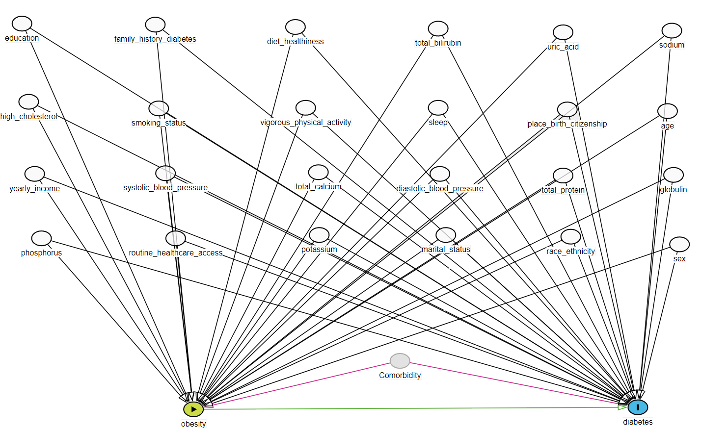

1 Data to Analyze
To answer the research question “Does obesity increase the risk of developing diabetes?” in the U.S. context, we do the following:
1.1 Choose a U.S. data source
- Data source: National Health and Nutrition Examination Survey (NHANES) (Disease Control and Prevention 2021)
- Availability: NHANES is a publicly available dataset that can be downloaded for free from the CDC website.
- Design: Observational cross-sectional data. Hence, inferring causality is not a possibility or our objective here.
1.2 Confounder identification
Directed acyclic graph (DAG)
flowchart TB A[Obesity A] --> Y(Diabetes Y) L[Confounders C] --> Y L --> A

Exposure: Being obese
Outcome: Developing diabetes
Confounders: Demographic and lab variables
1.3 Structure of the data
flowchart LR D[NHANES 2013-14] --> demo[Demographic \nVariables \nand \nSample \nWeights] demo --> Age demo --> Sex demo --> Education demo --> r[Race or \nethnicity] demo --> m[Marital \nstatus] demo --> Income demo --> b[Birth place] demo --> sf[Survey \nfeatures: \nsampling \nweights, \nstrata, \ncluster] D --> bmi[Body \nMeasures] bmi --> Obesity D --> diq[Diabetes] diq --> Diabetes diq --> f[Family \nhistory of \ndiabetes] D --> smq[Smoking - \nCigarette Use] smq --> Smoking D --> dbq[Diet \nBehavior & \nNutrition] dbq --> Diet D --> paq[Physical \nActivity] paq --> p[Physical \nactivities] D --> huq[Hospital \nUtilization & \nAccess \nto Care] huq --> mm[Medical \naccess] D --> bpx[Blood \nPressure] bpx --> sbp[Systolic \nBlood \nPressure] bpx --> dbp[Diastolic \nBlood \nPressure] D --> bpq[Blood \nPressure & \nCholesterol] bpq --> hc[High \ncholesterol] D --> slq[Sleep \nDisorders] slq --> Sleep D --> biopro[Standard\n Biochemistry \nProfile] biopro --> u[Uric \nacid] biopro --> Protein biopro --> Bilirubin biopro --> Phosphorus biopro --> Sodium biopro --> Potassium biopro --> Globulin biopro --> Calcium D --> rxq[Prescription\n Medications - \nICD-10-CM \ncodes] style D fill:#FFA500; style rxq fill:#00FF00; style biopro fill:#00FF00; style slq fill:#00FF00; style bpq fill:#00FF00; style bpx fill:#00FF00; style huq fill:#00FF00; style paq fill:#00FF00; style dbq fill:#00FF00; style smq fill:#00FF00; style diq fill:#00FF00; style bmi fill:#00FF00; style demo fill:#00FF00;
We do the same for the following cycles:
- NHANES 2015-16
- NHANES 2017-18
1.4 Identify measured and unmeasured variables in the data
Find variables capturing the following concepts in the data based on a hypothesized DAG.
| Role | Data Component | Variables considered based on DAG |
|---|---|---|
| Outcome | DIQ | Have diabetes1 |
| Exposure | BMX | Obese; BMI >= 30 |
| Confounder | (demographic) DEMO | Age, Sex, Education, Race/ethnicity, Marital status, Annual household income, County of birth, Survey cycle year |
| (behaviour) SMQ, PAQ, SLQ, DBQ | Smoking2, Vigorous work activity, Sleep3, Diet4 | |
| (health history / access) DIQ, HUQ | Diabetes family history, Access to care5 | |
| (lab) BPX, BPQ, BIOPRO | Blood pressure (systolic, diastolic6), Cholesterol, Uric acid, Total Protein, Total Bilirubin, Phosphorus, Sodium, Potassium, Globulin, Total Calcium |
- 14 demographic, behavioral, health history related variables
- Mostly categorical
- 11 lab variables
- Mostly continuous
1.5 Fitting crude model to obtain OR
Crude association
Here we estimate the crude association between the exposure and the outcome.
out.formula <- as.formula("outcome ~ exposure")
fit <- glm(out.formula,
data = hdps.data,
family= binomial(link = "logit"))
fit.summary <- summary(fit)$coef["exposure",
c("Estimate",
"Std. Error",
"Pr(>|z|)")]
fit.ci <- confint(fit, level = 0.95)["exposure", ]
fit.summary_with_ci.crude <- c(fit.summary, fit.ci)
knitr::kable(t(round(fit.summary_with_ci.crude, 2)))| Estimate | Std. Error | Pr(>|z|) | 2.5 % | 97.5 % |
|---|---|---|---|---|
| 0.73 | 0.05 | 0 | 0.63 | 0.84 |